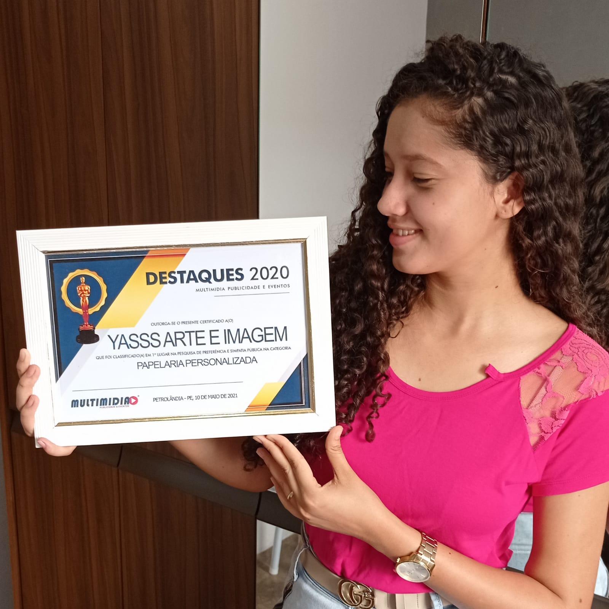

O que significa a palavra Yasss ?
A palavra é usada para expressar uma aprovação entusiasmada, algo como: "Aêêêê!".
Derivada de "yes!", e é empregado para comemorar conquistas.
O que faz sentido já que nossas conquistas são o resultado de todo o esforço e dedicação no que fazemos.
Sobre mim
Me chamo Bárbara e sou fundadora aqui da Yasss.
Estou por trás de cada atendimento e produto que chega até você.
te convido a ficar por aqui e me acompanhar, tenho certeza que algum produto aqui feito irá chamar sua atenção e ganhar seu coração.
-babi
@barbaralays_